← 本轮 smoke 总览traex/DeepSeek-V4.1-Flash · 0041
vision-agent · 256×144 · 4.0 FPS · 20 帧 · 状态 complete · 输出 tokens 46053
原始任务Static locked-off single-shot with fixed frame throughout filmed with constant framerate in real-time. The scene shows a realistic scientific demonstration. The scene only contains the described setup and actions. One half of a tangerine has been placed on a glass cutting board. The knife slices through the tangerine.
当前保存结果
已保存候选与代码修改
这里按时间展示外部捕获的候选，每份均可单独播放。保存新版本不等于完成视觉检查；下方工具证据记录实际看过的图。
候选 01 · 2026-11-09T00:55:19.112706+00:00 · 点开播放与检查图
inspection.png

transition_check.png
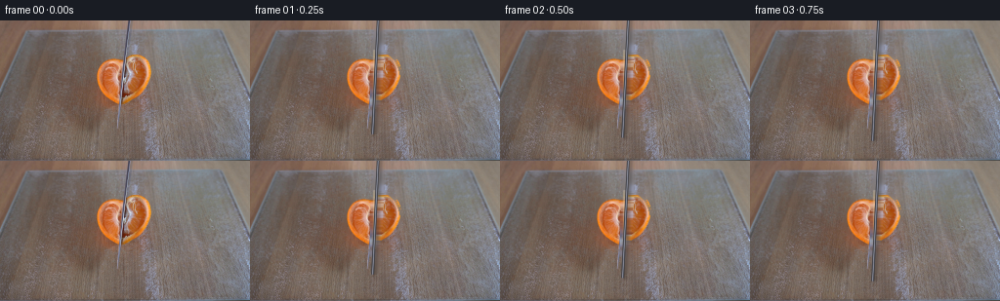
代码变化
--- 上一保存版本
+++ 本次保存版本
@@ -0,0 +1,218 @@
+from pathlib import Path
+
+import cv2
+import numpy as np
+
+import artifact_io
+
+
+ROOT = Path(__file__).resolve().parent
+WIDTH, HEIGHT = 256, 144
+N_FRAMES = 20
+
+
+def smoothstep(value):
+ value = np.clip(value, 0.0, 1.0)
+ return value * value * (3.0 - 2.0 * value)
+
+
+def make_fruit_mask():
+ """A close silhouette of the tangerine, including its slightly uneven rim."""
+ mask = np.zeros((HEIGHT, WIDTH), np.uint8)
+ points = np.array(
+ [
+ [127, 30], [134, 31], [141, 35], [147, 41], [151, 49],
+ [153, 57], [152, 65], [149, 74], [144, 81], [138, 86],
+ [131, 89], [125, 91], [118, 89], [112, 85], [106, 79],
+ [101, 72], [98, 63], [99, 54], [102, 46], [108, 38],
+ [116, 33],
+ ],
+ np.int32,
+ )
+ cv2.fillPoly(mask, [points], 255)
+ return mask
+
+
+def make_blade_mask():
+ mask = np.zeros((HEIGHT, WIDTH), np.uint8)
+ points = np.array(
+ [[130, 0], [134, 0], [134, 32], [133, 62], [131, 91],
+ [130, 113], [127, 113], [125, 91], [125, 60], [127, 30]],
+ np.int32,
+ )
+ cv2.fillPoly(mask, [points], 255)
+ return mask
+
+
+def inpaint_fruit_strip(image, mask):
+ """Remove the blade from the fruit with row-wise interpolation."""
+ result = image.copy()
+ ys, xs = np.nonzero(mask)
+ for y in np.unique(ys):
+ row_mask = mask[y].astype(bool)
+ row_xs = np.flatnonzero(row_mask)
+ left = row_xs[0] - 1
+ right = row_xs[-1] + 1
+ while left >= 0 and row_mask[left]:
+ left -= 1
+ while right < WIDTH and row_mask[right]:
+ right += 1
+ if left >= 0 and right < WIDTH:
+ left_color = image[y, left].astype(np.float32)
+ right_color = image[y, right].astype(np.float32)
+ for x in row_xs:
+ t = (x - left) / max(right - left, 1)
+ result[y, x] = np.clip(
+ (1.0 - t) * left_color + t * right_color + 0.5, 0, 255
+ ).astype(np.uint8)
+ return result
+
+
+def soft_alpha(mask, blur=0.62):
+ alpha = (mask > 0).astype(np.float32)
+ alpha = cv2.GaussianBlur(alpha, (0, 0), blur)
+ alpha[mask == 0] *= 0.72
+ return np.clip(alpha, 0.0, 1.0)
+
+
+def warp_rgba(image, alpha, dx, dy):
+ matrix = np.float32([[1.0, 0.0, dx], [0.0, 1.0, dy]])
+ warped = cv2.warpAffine(
+ image,
+ matrix,
+ (WIDTH, HEIGHT),
+ flags=cv2.INTER_LINEAR,
+ borderMode=cv2.BORDER_REFLECT_101,
+ )
+ warped_alpha = cv2.warpAffine(
+ alpha,
+ matrix,
+ (WIDTH, HEIGHT),
+ flags=cv2.INTER_LINEAR,
+ borderMode=cv2.BORDER_CONSTANT,
+ borderValue=0,
+ )
+ return warped, warped_alpha
+
+
+def add_cut_edge(piece, alpha, side, split_x):
+ """Add a narrow, pale pith lip where the knife has opened the fruit."""
+ yy, xx = np.mgrid[:HEIGHT, :WIDTH]
+ distance = np.abs(xx + 0.5 - split_x)
+ inner = (distance < 1.15) & (alpha > 0.20)
+ if side == "left":
+ inner &= xx <= split_x
+ else:
+ inner &= xx >= split_x
+ lip = cv2.GaussianBlur(inner.astype(np.float32), (0, 0), 0.48)
+ pith = np.array([232.0, 207.0, 158.0], np.float32)
+ return np.clip(
+ piece.astype(np.float32) * (1.0 - 0.34 * lip[..., None])
+ + pith * (0.34 * lip[..., None]),
+ 0,
+ 255,
+ ).astype(np.uint8)
+
+
+def draw_blade(frame, y_offset):
+ """Composite a slim steel blade with a soft contact shadow."""
+ yy, xx = np.mgrid[:HEIGHT, :WIDTH].astype(np.float32)
+ source_y = yy - y_offset
+ center = 131.0 - 0.048 * source_y
+ distance = np.abs(xx + 0.5 - center)
+ half_width = 1.18 + 0.11 * np.clip((source_y - 35.0) / 80.0, 0.0, 1.0)
+ edge = np.clip(half_width + 0.72 - distance, 0.0, 1.0)
+ length = np.clip((113.5 + y_offset - yy) / 1.4, 0.0, 1.0)
+ blade_alpha = edge * length
+ blade_alpha *= (source_y > -80.0).astype(np.float32)
+
+ shadow_center = center + 2.25
+ shadow_distance = np.abs(xx + 0.5 - shadow_center)
+ shadow_alpha = np.clip(2.8 - shadow_distance, 0.0, 1.0)
+ shadow_alpha *= np.clip((116.0 + y_offset - yy) / 4.0, 0.0, 1.0)
+ shadow_alpha *= (source_y > -80.0).astype(np.float32)
+ shadow_alpha = cv2.GaussianBlur(shadow_alpha, (0, 0), 1.15) * 0.23
+
+ shade = np.clip(112.0 - 35.0 * distance, 48.0, 122.0)
+ steel = np.stack((shade * 0.91, shade * 0.92, shade), axis=-1)
+ highlight = np.exp(-((distance - 0.22) / 0.32) ** 2)
+ steel += highlight[..., None] * np.array([34.0, 35.0, 39.0], np.float32)
+
+ out = frame.astype(np.float32)
+ out *= 1.0 - shadow_alpha[..., None]
+ out += np.array([24.0, 22.0, 20.0], np.float32) * shadow_alpha[..., None]
+ out = out * (1.0 - blade_alpha[..., None]) + steel * blade_alpha[..., None]
+ return np.clip(out, 0, 255).astype(np.uint8)
+
+
+def main():
+ original_bgr = cv2.imread(str(ROOT / "first_frame.png"), cv2.IMREAD_COLOR)
+ original = cv2.cvtColor(original_bgr, cv2.COLOR_BGR2RGB)
+
+ fruit_mask = make_fruit_mask()
+ blade_mask = make_blade_mask()
+
+ # Reconstruct the glass board beneath the complete fruit. Only the narrow
+ # opening between the two pieces is visible in the animation.
+ background_mask = cv2.bitwise_or(fruit_mask, blade_mask)
+ background_mask = cv2.dilate(background_mask, np.ones((5, 5), np.uint8), iterations=1)
+ clean_background = cv2.inpaint(
+ original_bgr, background_mask, 4.2, cv2.INPAINT_TELEA
+ )
+ clean_background = cv2.cvtColor(clean_background, cv2.COLOR_BGR2RGB)
+
+ blade_in_fruit = cv2.bitwise_and(blade_mask, fruit_mask)
+ blade_in_fruit = cv2.dilate(blade_in_fruit, np.ones((3, 3), np.uint8), iterations=1)
+ clean_fruit = inpaint_fruit_strip(original, blade_in_fruit)
+
+ alpha = soft_alpha(fruit_mask, 0.58)
+ yy, xx = np.mgrid[:HEIGHT, :WIDTH]
+ split_x = 127.4
+ left_alpha = alpha * (xx <= split_x + 0.35)
+ right_alpha = alpha * (xx >= split_x - 0.35)
+
+ left_rgb = add_cut_edge(clean_fruit, left_alpha, "left", split_x)
+ right_rgb = add_cut_edge(clean_fruit, right_alpha, "right", split_x)
+
+ blade_offsets = {
+ 1: 3.5, 2: 7.0, 3: 10.5, 4: 14.0, 5: 17.5,
+ 6: 21.0, 7: 24.0, 8: 24.0, 9: 12.0, 10: 0.0,
+ 11: -12.0, 12: -24.0, 13: -36.0, 14: -48.0,
+ 15: -60.0, 16: -72.0, 17: -84.0, 18: -96.0,
+ }
+
+ frames = np.empty((N_FRAMES, HEIGHT, WIDTH, 3), np.uint8)
+ frames[0] = original
+
+ for index in range(1, N_FRAMES):
+ frame = clean_background.astype(np.float32)
+
+ separation = 0.0
+ if index >= 8:
+ u = smoothstep((index - 7.0) / 12.0)
+ separation = 2.65 * u
+
+ left_rgb_warped, left_alpha_warped = warp_rgba(
+ left_rgb, left_alpha, -separation, 0.0
+ )
+ right_rgb_warped, right_alpha_warped = warp_rgba(
+ right_rgb, right_alpha, separation, 0.0
+ )
+
+ for piece, piece_alpha in (
+ (left_rgb_warped, left_alpha_warped),
+ (right_rgb_warped, right_alpha_warped),
+ ):
+ frame = frame * (1.0 - piece_alpha[..., None])
+ frame += piece.astype(np.float32) * piece_alpha[..., None]
+
+ frame = np.clip(frame, 0, 255).astype(np.uint8)
+ if index in blade_offsets:
+ frame = draw_blade(frame, blade_offsets[index])
+ frames[index] = frame
+
+ artifact_io.save(frames, ROOT)
+
+
+if __name__ == "__main__":
+ main()
候选 02 · 2026-11-09T00:58:44.573421+00:00 · 点开播放与检查图
inspection.png

transition_check.png

代码变化
--- 上一保存版本
+++ 本次保存版本
@@ -21,11 +21,11 @@
mask = np.zeros((HEIGHT, WIDTH), np.uint8)
points = np.array(
[
- [127, 30], [134, 31], [141, 35], [147, 41], [151, 49],
- [153, 57], [152, 65], [149, 74], [144, 81], [138, 86],
- [131, 89], [125, 91], [118, 89], [112, 85], [106, 79],
- [101, 72], [98, 63], [99, 54], [102, 46], [108, 38],
- [116, 33],
+ [127, 29], [135, 31], [142, 34], [148, 39], [153, 44],
+ [156, 50], [157, 57], [156, 64], [153, 72], [149, 78],
+ [143, 84], [137, 88], [130, 91], [123, 91], [116, 88],
+ [110, 84], [104, 78], [100, 70], [98, 62], [99, 53],
+ [103, 45], [109, 38], [117, 33],
],
np.int32,
)
@@ -167,9 +167,14 @@
alpha = soft_alpha(fruit_mask, 0.58)
yy, xx = np.mgrid[:HEIGHT, :WIDTH]
- split_x = 127.4
- left_alpha = alpha * (xx <= split_x + 0.35)
- right_alpha = alpha * (xx >= split_x - 0.35)
+ split_x = (
+ 130.1
+ - 0.044 * (yy - 30.0)
+ + 0.27 * np.sin(yy * 0.73)
+ + 0.12 * np.sin(yy * 1.91)
+ )
+ left_alpha = alpha * (xx <= split_x + 0.30)
+ right_alpha = alpha * (xx >= split_x - 0.30)
left_rgb = add_cut_edge(clean_fruit, left_alpha, "left", split_x)
right_rgb = add_cut_edge(clean_fruit, right_alpha, "right", split_x)
@@ -190,7 +195,7 @@
separation = 0.0
if index >= 8:
u = smoothstep((index - 7.0) / 12.0)
- separation = 2.65 * u
+ separation = 0.92 * u
left_rgb_warped, left_alpha_warped = warp_rgba(
left_rgb, left_alpha, -separation, 0.0
候选 03 · 2026-11-09T00:58:46.499904+00:00 · 点开播放与检查图
inspection.png

transition_check.png

代码变化
代码未变化；重新保存了产物。
可观测工具行为
命令 1 · 2026-11-09T00:52:00.316014+00:00/bin/bash -c "pwd && rg --files -g '"'!*.git*'"' | sed -n '1,120p'"
exit 0 命令 2 · 2026-11-09T00:52:00.427496+00:00/bin/bash -c 'cat prompt.txt'
exit 0 命令 3 · 2026-11-09T00:52:00.723480+00:00/bin/bash -c 'cat GENERATION_RULES.md'
exit 0 命令 4 · 2026-11-09T00:52:00.907046+00:00/bin/bash -c "find . -maxdepth 2 -type f -printf '%p %s bytes\\n' | sort"
exit 0 命令 5 · 2026-11-09T00:52:07.254841+00:00/bin/bash -c "sed -n '1,260p' artifact_io.py"
exit 0 命令 6 · 2026-11-09T00:52:14.534243+00:00/bin/bash -c "python - <<'PY'
from PIL import Image
im=Image.open('first_frame.png').convert('RGB')
print(im.size)
im.crop((78,25,176,123)).resize((392,392), Image.Resampling.NEAREST).save('.tmp/fruit_4x.png')
im.crop((112,0,148,144)).resize((216,864), Image.Resampling.NEAREST).save('.tmp/knife_6x.png')
PY"exit 0 命令 7 · 2026-11-09T00:52:22.948237+00:00/bin/bash -c "python - <<'PY'
from PIL import Image
im=Image.open('first_frame.png').convert('RGB')
# nearest upscale full scene with pixel grid sampling around target
im.crop((60,15,195,140)).resize((810,750),Image.Resampling.NEAREST).save('.tmp/scene_6x.png')
PY"exit 0 命令 8 · 2026-11-09T00:52:33.835708+00:00/bin/bash -c "python - <<'PY'
import importlib.util
for m in ['cv2','scipy','skimage','imageio','moviepy']:
print(m, bool(importlib.util.find_spec(m)))
PY"
exit 0 命令 9 · 2026-11-09T00:52:46.735835+00:00/bin/bash -c "python - <<'PY'
from PIL import Image, ImageDraw
im=Image.open('first_frame.png').convert('RGB')
# upscale 8x crop
x0,y0,x1,y1=95,0,160,125
s=8
crop=im.crop((x0,y0,x1,y1)).resize(((x1-x0)*s,(y1-y0)*s),Image.Resampling.NEAREST)
d=ImageDraw.Draw(crop)
for x in range(100,156,5):
xx=(x-x0)*s
d.line((xx,0,xx,(y1-y0)*s), fill=(255,0,255), width=1)
d.text((xx+2,2),str(x),fill=(255,0,255))
for y in range(5,121,5):
yy=(y-y0)*s
d.line((0,yy,(x1-x0)*s,yy), fill=(0,255,255), width=1)
d.text((2,yy+1),str(y),fill=(0,255,255))
crop.save('.tmp/grid.png')
PY"exit 0 命令 10 · 2026-11-09T00:52:53.134385+00:00/bin/bash -c "python - <<'PY'
from PIL import Image
im=Image.open('first_frame.png').convert('RGB')
for name,box in [('fruit',(93,25,160,115)),('fruit2',(98,25,155,110)),('knife',(120,0,135,110))]:
x=im.crop(box); x=x.resize((x.width*8,x.height*8),Image.Resampling.LANCZOS); x.save('.tmp/'+name+'_8x.png')
PY"exit 0 命令 11 · 2026-11-09T00:52:59.470107+00:00/bin/bash -c "python - <<'PY'
from PIL import Image
im=Image.open('first_frame.png')
# make exact source comparison perhaps difference analysis
import numpy as np
x=np.asarray(im)
print(x.shape)
# print selected columns central y values and color transitions
for y in [15,20,25,30,35,40,45,50,55,60,65,70,75,80,85,90,95,100,105,110]:
print(y, [tuple(x[y,c]) for c in range(124,136)])
PY"exit 0 命令 12 · 2026-11-09T00:53:36.287626+00:00/bin/bash -c "python - <<'PY'
import cv2, numpy as np
from PIL import Image
src=cv2.imread('first_frame.png')
h,w=src.shape[:2]
hsv=cv2.cvtColor(src,cv2.COLOR_BGR2HSV)
H,S,V=cv2.split(hsv)
b,g,r=cv2.split(src)
yy,xx=np.mgrid[:h,:w]
# orange flesh/rind threshold
orange=((r.astype(int)>g.astype(int)+18)&(r.astype(int)>b.astype(int)+28)&(S>55)&(yy>23)&(yy<92)&(xx>90)&(xx<165)).astype(np.uint8)*255
# close and fill convex hull
orange=cv2.morphologyEx(orange,cv2.MORPH_CLOSE,np.ones((5,5),np.uint8))
contours,_=cv2.findContours(orange,cv2.RETR_EXTERNAL,cv2.CHAIN_APPROX_SIMPLE)
pts=np.vstack([c for c in contours if cv2.contourArea(c)>20])
hull=cv2.convexHull(pts)
fruit=np.zeros((h,w),np.uint8); cv2.fillPoly(fruit,[hull],255)
# clip to plausible ellipse-ish region via polygon? hull likely
knife=np.zeros((h,w),np.uint8)
poly=np.array([[123,0],[132,0],[134,35],[133,66],[132,93],[131,110],[128,112],[126,107],[126,82],[125,55],[124,28]],np.int32)
cv2.fillPoly(knife,[poly],255)
vis=src.copy(); vis[fruit>0]=(0.6*vis[fruit>0]+0.4*np.array([0,255,0])).astype(np.uint8)
vis[knife>0]=(0.6*vis[knife>0]+0.4*np.array([255,0,255])).astype(np.uint8)
cv2.imwrite('.tmp/masks.png',vis)
print('fruit bbox',cv2.boundingRect(fruit), 'hull area',cv2.contourArea(hull), 'knife',cv2.boundingRect(knife))
PY"exit 0 命令 13 · 2026-11-09T00:53:43.135518+00:00/bin/bash -c "python - <<'PY'
import cv2,numpy as np
im=cv2.imread('first_frame.png')
g=cv2.cvtColor(im,cv2.COLOR_BGR2GRAY)
h,w=g.shape
# analyze blade cross-section: contrast horizontal around x126 per y
for y in range(0,115,5):
vals=[(x,int(g[y,x])) for x in range(120,138)]
print(y,vals)
PY"exit 0 命令 14 · 2026-11-09T00:54:00.864953+00:00/bin/bash -c "python - <<'PY'
from PIL import Image, ImageDraw
im=Image.open('first_frame.png').convert('RGB')
x0,y0,x1,y1=80,0,180,130;s=6
crop=im.crop((x0,y0,x1,y1)).resize(((x1-x0)*s,(y1-y0)*s),Image.Resampling.NEAREST)
d=ImageDraw.Draw(crop)
for x in range(80,181,10):
xx=(x-x0)*s; d.line((xx,0,xx,(y1-y0)*s),fill=(255,0,255),width=1); d.text((xx+2,2),str(x),fill=(255,0,255))
for y in range(0,131,10):
yy=(y-y0)*s; d.line((0,yy,(x1-x0)*s,yy),fill=(0,255,255),width=1); d.text((2,yy+1),str(y),fill=(0,255,255))
crop.save('.tmp/grid2.png')
PY"exit 0 命令 15 · 2026-11-09T00:54:07.660888+00:00/bin/bash -c "python - <<'PY'
from PIL import Image
im=Image.open('first_frame.png')
# print grayscale matrix with threshold to see blade. use color diff from local horizontal median
import numpy as np
x=np.asarray(im.convert('L')).astype(float)
for y in range(0,115,2):
vals=x[y,121:137]
# darkest two positions
inds=np.argsort(vals)[:3]+121
print(f'{y:3d}:', ' '.join(f'{int(v):3d}' for v in vals), ' dark',inds.tolist())
PY"exit 0 命令 16 · 2026-11-09T00:55:17.745847+00:00/bin/bash -c 'python generate.py'
exit 0 命令 17 · 2026-11-09T00:55:28.717160+00:00/bin/bash -c "python - <<'PY'
from PIL import Image
import numpy as np
for i in [1,4,8,12,16,19]:
im=Image.open(f'frames/{i:02d}.png').convert('RGB')
crop=im.crop((88,22,164,102)).resize((456,480),Image.Resampling.LANCZOS)
crop.save(f'.tmp/f{i:02d}_6x.png')
# compare clean fruit and source crops side by side
im=Image.open('first_frame.png').convert('RGB')
im.crop((88,22,164,102)).resize((456,480),Image.Resampling.LANCZOS).save('.tmp/source_6x.png')
PY"exit 0 命令 18 · 2026-11-09T00:55:39.108321+00:00/bin/bash -c "python - <<'PY'
import cv2,numpy as np
im=cv2.imread('first_frame.png')
# per y, print rgb for x 98..157 at intervals; identify orange mask manually. Use hsv threshold to find run
hsv=cv2.cvtColor(im,cv2.COLOR_BGR2HSV); H,S,V=cv2.split(hsv); b,g,r=cv2.split(im)
for y in range(30,92,2):
m=((r.astype(int)>g.astype(int)+15)&(r.astype(int)>b.astype(int)+25)&(S>60))
xs=np.flatnonzero(m[y,85:170])+85
if len(xs): print(y, int(xs.min()),int(xs.max()), len(xs))
PY"exit 0 命令 19 · 2026-11-09T00:55:46.694532+00:00/bin/bash -c "python - <<'PY'
from PIL import Image
import numpy as np
src=np.asarray(Image.open('first_frame.png').convert('RGB'))
out=np.asarray(Image.open('frames/08.png').convert('RGB'))
# save difference amplified
D=np.abs(src.astype(int)-out.astype(int)).astype(np.uint8)
D=np.clip(D*4,0,255).astype(np.uint8)
Image.fromarray(D).save('.tmp/diff8.png')
PY"exit 0 命令 20 · 2026-11-09T00:55:53.890188+00:00/bin/bash -c "python - <<'PY'
from PIL import Image,ImageDraw
im=Image.open('frames/08.png').convert('RGB')
# overlay coordinate lines for understanding seam
x0,y0,x1,y1=100,25,155,95;s=8
c=im.crop((x0,y0,x1,y1)).resize(((x1-x0)*s,(y1-y0)*s),Image.Resampling.NEAREST)
d=ImageDraw.Draw(c)
for x in range(100,156,5):
xx=(x-x0)*s;d.line((xx,0,xx,(y1-y0)*s),fill=(255,0,255),width=1);d.text((xx+1,1),str(x),fill=(255,0,255))
for y in range(25,96,5):
yy=(y-y0)*s;d.line((0,yy,(x1-x0)*s,yy),fill=(0,255,255),width=1);d.text((1,yy+1),str(y),fill=(0,255,255))
c.save('.tmp/f08_grid.png')
PY"exit 0 命令 21 · 2026-11-09T00:56:02.062433+00:00/bin/bash -c "python - <<'PY'
import cv2,numpy as np
im=cv2.imread('first_frame.png'); hsv=cv2.cvtColor(im,cv2.COLOR_BGR2HSV); H,S,V=cv2.split(hsv); b,g,r=cv2.split(im)
m=((r.astype(int)>g.astype(int)+15)&(r.astype(int)>b.astype(int)+25)&(S>60)&(np.indices(H.shape)[0]>23)&(np.indices(H.shape)[0]<95)&(np.indices(H.shape)[1]>85)&(np.indices(H.shape)[1]<170)).astype(np.uint8)*255
m=cv2.morphologyEx(m,cv2.MORPH_CLOSE,np.ones((3,3),np.uint8))
# contours and polygon approximations
contours,_=cv2.findContours(m,cv2.RETR_EXTERNAL,cv2.CHAIN_APPROX_SIMPLE)
c=max(contours,key=cv2.contourArea)
hull=cv2.convexHull(c)
print(cv2.boundingRect(hull),cv2.contourArea(hull))
print(hull[:,0,:].tolist())
vis=im.copy(); cv2.polylines(vis,[hull],True,(0,255,0),1); cv2.imwrite('.tmp/hull.png',vis)
PY"exit 0 命令 22 · 2026-11-09T00:56:09.837664+00:00/bin/bash -c "python - <<'PY'
import cv2,numpy as np
im=cv2.imread('first_frame.png');hsv=cv2.cvtColor(im,cv2.COLOR_BGR2HSV);H,S,V=cv2.split(hsv);b,g,r=cv2.split(im);yy,xx=np.indices(H.shape)
m=((r.astype(int)>g.astype(int)+15)&(r.astype(int)>b.astype(int)+25)&(S>60)&(yy>23)&(yy<95)&(xx>85)&(xx<170)).astype(np.uint8)*255
m=cv2.morphologyEx(m,cv2.MORPH_CLOSE,np.ones((3,3),np.uint8))
# manually crop bright red-brown fruit; inspect each row extents and output raw mask
cv2.imwrite('.tmp/rawmask.png',m)
PY"exit 0 命令 23 · 2026-11-09T00:56:17.367752+00:00/bin/bash -c "python - <<'PY'
from PIL import Image
import numpy as np
im=np.asarray(Image.open('first_frame.png').convert('RGB'))
for y in range(29,96):
# ranges of pixels where orange-ish, constrained x 90:160
row=im[y,90:160]; r,g,b=row[:,0].astype(int),row[:,1].astype(int),row[:,2].astype(int)
m=(r>g+15)&(r>b+25)&(r>70)
xs=np.flatnonzero(m)+90
if len(xs):
print(f'{y}: {xs.min()}..{xs.max()}')
PY"exit 0 命令 24 · 2026-11-09T00:56:21.820925+00:00/bin/bash -c "python - <<'PY'
from PIL import Image
import numpy as np
im=np.asarray(Image.open('first_frame.png').convert('RGB')).astype(int)
# crop upscaled nearest with 1 pixel per 8
for y in range(28,100,2):
row=im[y,85:170]
# detect hue/saturation manually using simple orange diff. print likely boundary based max in central
d=row[:,0]-row[:,2]
print(y, ' '.join(f'{v:3d}' for v in d))
PY"exit 0 命令 25 · 2026-11-09T00:56:27.225053+00:00/bin/bash -c "python - <<'PY'
import numpy as np, cv2
from PIL import Image
im=np.asarray(Image.open('first_frame.png').convert('RGB'))
# visually save contour candidate: orange mask with largest contour after thresholding, restrict bounding region
r,g,b=[im[:,:,i].astype(int) for i in range(3)]
m=(r>g+18)&(r>b+28)&(r>65)
m[:28]=False;m[100:]=False;m[:,:90]=False;m[:,160:]=False
m=m.astype(np.uint8)*255
# remove small components
n,labels,stats,_=cv2.connectedComponentsWithStats(m,8)
out=np.zeros_like(m)
for i in range(1,n):
if stats[i,cv2.CC_STAT_AREA]>200: out[labels==i]=255
contours,_=cv2.findContours(out,cv2.RETR_EXTERNAL,cv2.CHAIN_APPROX_SIMPLE)
c=max(contours,key=cv2.contourArea)
print('area',cv2.contourArea(c),'bbox',cv2.boundingRect(c))
for eps in [1.0,2.0,3.0,4.0]:
ap=cv2.approxPolyDP(c,eps,True)
print(eps, len(ap),ap[:,0,:].tolist())
# save colored mask
vis=im.copy();vis[out>0]=(0.5*vis[out>0]+0.5*np.array([0,255,0])).astype(np.uint8)
Image.fromarray(vis).save('.tmp/fruitmask2.png')
PY"exit 0 命令 26 · 2026-11-09T00:56:35.673321+00:00/bin/bash -c "python - <<'PY'
# import module without running main and save debug clean plate/fruit
import generate, cv2, numpy as np
from PIL import Image
orig=cv2.cvtColor(cv2.imread('first_frame.png'),cv2.COLOR_BGR2RGB)
fm=generate.make_fruit_mask(); bm=generate.make_blade_mask(); bgm=cv2.dilate(cv2.bitwise_or(fm,bm),np.ones((5,5),np.uint8),iterations=1)
cb=cv2.cvtColor(cv2.inpaint(cv2.cvtColor(orig,cv2.COLOR_RGB2BGR),bgm,4.2,cv2.INPAINT_TELEA),cv2.COLOR_BGR2RGB)
Image.fromarray(cb).save('.tmp/clean_bg.png')
bif=cv2.dilate(cv2.bitwise_and(bm,fm),np.ones((3,3),np.uint8),iterations=1)
cf=generate.inpaint_fruit_strip(orig,bif)
Image.fromarray(cf).save('.tmp/clean_fruit.png')
Image.fromarray(np.dstack([fm]*3)).save('.tmp/mask.png')
PY"exit 0 命令 27 · 2026-11-09T00:56:46.377008+00:00/bin/bash -c "python - <<'PY'
from PIL import Image
import numpy as np
src=np.asarray(Image.open('first_frame.png').convert('RGB'))
# detect fruit boundary by comparing each row to board colors at x=80 and x=170; use simple color distance to estimated board at same y
for y in range(25,101):
# board reference median x 70:85 and 170:190
ref=np.median(np.r_[src[y,70:85],src[y,170:190]],axis=0)
row=src[y,85:170].astype(float)
dist=np.linalg.norm(row-ref,axis=1)
xs=np.flatnonzero(dist>25)+85
if len(xs): print(y,xs.min(),xs.max())
PY"exit 0 命令 28 · 2026-11-09T00:57:05.723359+00:00/bin/bash -c "python - <<'PY'
from PIL import Image
import numpy as np, hashlib, json
src=np.asarray(Image.open('first_frame.png').convert('RGB'))
fr=np.asarray(Image.open('frames/00.png').convert('RGB'))
print('frame0 identical:', np.array_equal(src,fr), 'maxdiff',np.abs(src.astype(int)-fr.astype(int)).max())
z=np.load('pixels.npz')['pixels']
print('pixels',z.shape,z.dtype,'frame count',z.shape[2])
print('mean abs consecutive diffs', [round(float(np.abs(z[:,:,i+1].astype(int)-z[:,:,i].astype(int)).mean()),3) for i in range(19)])
PY"exit 0 命令 29 · 2026-11-09T00:57:09.989749+00:00/bin/bash -c "python - <<'PY'
from PIL import Image
import numpy as np
z=np.load('pixels.npz')['pixels']
def rgb(p):
return np.stack([(p>>16)&255,(p>>8)&255,p&255],axis=-1).astype(np.uint8)
for i in range(1,20):
a=rgb(z[:,:,i-1]);b=rgb(z[:,:,i]); print(i,float(np.abs(a.astype(int)-b.astype(int)).mean()))
PY"exit 0 命令 30 · 2026-11-09T00:57:25.350954+00:00/bin/bash -c "python - <<'PY'
import cv2,numpy as np
from PIL import Image
im=cv2.imread('first_frame.png')
h,w=im.shape[:2]
mask=np.full((h,w),cv2.GC_BGD,np.uint8)
# probable foreground central fruit region, excluding blade? all
mask[30:96,88:162]=cv2.GC_PR_FGD
# strong orange likely FG
hsv=cv2.cvtColor(im,cv2.COLOR_BGR2HSV); H,S,V=cv2.split(hsv); b,g,r=cv2.split(im)
strong=(r.astype(int)>g.astype(int)+18)&(r.astype(int)>b.astype(int)+25)&(S>60)
mask[strong]=cv2.GC_FGD
# board outside likely bg
mask[:25]=cv2.GC_BGD; mask[105:]=cv2.GC_BGD; mask[:,:80]=cv2.GC_BGD; mask[:,180:]=cv2.GC_BGD
bgd=np.zeros((1,65),np.float64);fgd=np.zeros((1,65),np.float64)
cv2.grabCut(im,mask,None,bgd,fgd,5,cv2.GC_INIT_WITH_MASK)
m=np.where((mask==cv2.GC_FGD)|(mask==cv2.GC_PR_FGD),255,0).astype(np.uint8)
# keep largest contour
contours,_=cv2.findContours(m,cv2.RETR_EXTERNAL,cv2.CHAIN_APPROX_SIMPLE)
c=max(contours,key=cv2.contourArea)
out=np.zeros_like(m);cv2.drawContours(out,[c],-1,255,-1)
print('bbox',cv2.boundingRect(out),'area',cv2.contourArea(c))
vis=im.copy();vis[out>0]=(0.5*vis[out>0]+0.5*np.array([0,255,0])).astype(np.uint8)
cv2.imwrite('.tmp/grab.png',vis)
cv2.imwrite('.tmp/grabfruit.png',cv2.bitwise_and(im,im,mask=out))
PY"exit 0 命令 31 · 2026-11-09T00:57:32.415622+00:00/bin/bash -c "python - <<'PY'
from PIL import Image
import numpy as np
src=np.asarray(Image.open('first_frame.png').convert('RGB'))
# print avg color patches around target and image edges
for name,(x0,y0,x1,y1) in {'Lfruit':(85,30,95,95),'Rfruit':(145,35,165,90),'boardtop':(60,25,80,100),'boardbottom':(100,100,150,120)}.items():
p=src[y0:y1,x0:x1].reshape(-1,3); print(name, np.median(p,axis=0),p.mean(axis=0))
PY"exit 0 命令 32 · 2026-11-09T00:57:38.333130+00:00/bin/bash -c "python - <<'PY'
import cv2,numpy as np
from PIL import Image
im=cv2.imread('first_frame.png');h,w=im.shape[:2]
mask=np.full((h,w),cv2.GC_BGD,np.uint8)
mask[31:96,86:164]=cv2.GC_PR_FGD
hsv=cv2.cvtColor(im,cv2.COLOR_BGR2HSV); H,S,V=cv2.split(hsv); b,g,r=cv2.split(im)
strong=(r.astype(int)>g.astype(int)+25)&(r.astype(int)>b.astype(int)+35)&(S>80)&(r>90)
mask[strong]=cv2.GC_FGD
mask[:28]=cv2.GC_BGD;mask[100:]=cv2.GC_BGD;mask[:,:83]=cv2.GC_BGD;mask[:,168:]=cv2.GC_BGD
bgd=np.zeros((1,65),np.float64);fgd=np.zeros((1,65),np.float64)
cv2.grabCut(im,mask,None,bgd,fgd,3,cv2.GC_INIT_WITH_MASK)
m=np.where((mask==cv2.GC_FGD)|(mask==cv2.GC_PR_FGD),255,0).astype(np.uint8)
contours,_=cv2.findContours(m,cv2.RETR_EXTERNAL,cv2.CHAIN_APPROX_SIMPLE);c=max(contours,key=cv2.contourArea)
out=np.zeros_like(m);cv2.drawContours(out,[c],-1,255,-1)
# close holes maybe fill small
vis=im.copy();vis[out>0]=(0.5*vis[out>0]+0.5*np.array([0,255,0])).astype(np.uint8)
cv2.imwrite('.tmp/grab2.png',vis)
print(cv2.boundingRect(out),cv2.contourArea(c))
PY"exit 0 命令 33 · 2026-11-09T00:57:47.726523+00:00/bin/bash -c "python - <<'PY'
import cv2,numpy as np
im=cv2.imread('first_frame.png');h,w=im.shape[:2]
mask=np.full((h,w),cv2.GC_BGD,np.uint8)
mask[28:98,84:168]=cv2.GC_PR_FGD
hsv=cv2.cvtColor(im,cv2.COLOR_BGR2HSV); H,S,V=cv2.split(hsv); b,g,r=cv2.split(im)
strong=(r.astype(int)>g.astype(int)+10)&(r.astype(int)>b.astype(int)+18)&(S>45)&(r>60)
mask[strong]=cv2.GC_FGD
# force all external beyond fruit boundary to bg
mask[:28]=cv2.GC_BGD;mask[100:]=cv2.GC_BGD;mask[:,:80]=cv2.GC_BGD;mask[:,170:]=cv2.GC_BGD
bgd=np.zeros((1,65),np.float64);fgd=np.zeros((1,65),np.float64)
cv2.grabCut(im,mask,None,bgd,fgd,2,cv2.GC_INIT_WITH_MASK)
m=np.where((mask==cv2.GC_FGD)|(mask==cv2.GC_PR_FGD),255,0).astype(np.uint8)
# largest contour
contours,_=cv2.findContours(m,cv2.RETR_EXTERNAL,cv2.CHAIN_APPROX_SIMPLE);c=max(contours,key=cv2.contourArea)
out=np.zeros_like(m);cv2.drawContours(out,[c],-1,255,-1)
# smooth contour with close
out=cv2.morphologyEx(out,cv2.MORPH_CLOSE,np.ones((5,5),np.uint8))
vis=im.copy();vis[out>0]=(0.5*vis[out>0]+0.5*np.array([0,255,0])).astype(np.uint8)
cv2.imwrite('.tmp/grab3.png',vis)
print(cv2.boundingRect(out),cv2.contourArea(c))
PY"exit 0 命令 34 · 2026-11-09T00:57:55.684334+00:00/bin/bash -c "python - <<'PY'
from PIL import Image
import numpy as np
im=np.asarray(Image.open('first_frame.png').convert('RGB')).astype(int)
# display horizontal orange-diff maxima by row between x=85-165 to locate fruit left boundary
for y in range(25,101):
d=im[y,:,0]-im[y,:,2]
# print row values x 80-95 and 150-170
print(f'{y:3d} L', ' '.join(f'{d[x]:3d}' for x in range(78,101)), ' R',' '.join(f'{d[x]:3d}' for x in range(145,171)))
PY"exit 0 命令 35 · 2026-11-09T00:58:00.624244+00:00/bin/bash -c "python - <<'PY'
from PIL import Image
import numpy as np
src=np.asarray(Image.open('first_frame.png').convert('RGB'))
# use board texture extrapolation from same row: copy patch right of fruit into gap? just create crops with known coords
for name,(x0,y0,x1,y1) in {'left':(82,25,105,105),'right':(148,25,172,105),'top':(85,20,165,45),'bottom':(85,85,165,110)}.items():
Image.fromarray(src[y0:y1,x0:x1]).resize(((x1-x0)*8,(y1-y0)*8),Image.Resampling.LANCZOS).save('.tmp/bg_'+name+'.png')
PY"exit 0 命令 36 · 2026-11-09T00:58:11.076624+00:00/bin/bash -c "python - <<'PY'
from PIL import Image
import numpy as np
src=np.asarray(Image.open('first_frame.png').convert('RGB'))
# inspect candidate fruit boundary by gradients. Print strongest color-distance pixels from board estimate around x 150-165 by row
for y in range(32,96,2):
p=src[y,145:168].astype(int)
# adjacent color jump
d=np.linalg.norm(np.diff(p,axis=0),axis=1)
k=np.argsort(d)[-4:][::-1]+145
print(y,[(int(i),round(float(d[i-145]),1)) for i in k])
PY"exit 0 命令 37 · 2026-11-09T00:58:20.059705+00:00/bin/bash -c "python - <<'PY'
from PIL import Image
im=Image.open('frames/19.png').convert('RGB')
im.crop((115,25,170,100)).resize((440,600),Image.Resampling.NEAREST).save('.tmp/f19_8x.png')
PY"exit 0 命令 38 · 2026-11-09T00:58:44.051042+00:00/bin/bash -c 'python generate.py'
exit 0 命令 39 · 2026-11-09T00:59:01.761598+00:00/bin/bash -c "python - <<'PY'
from PIL import Image
im=Image.open('frames/19.png').convert('RGB')
im.crop((110,22,170,103)).resize((480,648),Image.Resampling.NEAREST).save('.tmp/f19b_8x.png')
im=Image.open('frames/04.png').convert('RGB')
im.crop((110,22,170,103)).resize((480,648),Image.Resampling.NEAREST).save('.tmp/f04b_8x.png')
PY"exit 0 命令 40 · 2026-11-09T00:59:09.296938+00:00/bin/bash -c "python - <<'PY'
from PIL import Image
import numpy as np
for i in [0,8,19]:
im=np.asarray(Image.open(f'frames/{i:02d}.png').convert('RGB'))
print('frame',i)
for y in range(30,96,10):
print(y, [tuple(im[y,x]) for x in range(155,162)])
PY"exit 0 命令 41 · 2026-11-09T00:59:13.890369+00:00/bin/bash -c "python - <<'PY'
from PIL import Image
import numpy as np
src=np.asarray(Image.open('first_frame.png').convert('RGB')).astype(int)
out=np.asarray(Image.open('frames/19.png').convert('RGB')).astype(int)
# difference threshold visualization within target region
D=np.linalg.norm(src-out,axis=2)
mask=(D>18).astype(np.uint8)*255
Image.fromarray(mask).save('.tmp/diffmask19.png')
# bbox changed target
ys,xs=np.nonzero(D>18)
print('bbox',xs.min(),ys.min(),xs.max(),ys.max())
PY"exit 0 命令 42 · 2026-11-09T00:59:22.261391+00:00/bin/bash -c "python - <<'PY'
from PIL import Image, ImageDraw
im=Image.open('frames/19.png').convert('RGB');x0,y0,x1,y1=145,35,165,95;s=14
c=im.crop((x0,y0,x1,y1)).resize(((x1-x0)*s,(y1-y0)*s),Image.Resampling.NEAREST)
d=ImageDraw.Draw(c)
for x in range(145,166,2):
xx=(x-x0)*s;d.line((xx,0,xx,(y1-y0)*s),fill=(255,0,255),width=1);d.text((xx+1,1),str(x),fill=(255,0,255))
for y in range(35,96,5):
yy=(y-y0)*s;d.line((0,yy,(x1-x0)*s,yy),fill=(0,255,255),width=1);d.text((1,yy+1),str(y),fill=(0,255,255))
c.save('.tmp/rightgrid.png')
PY"exit 0 命令 43 · 2026-11-09T00:59:29.832238+00:00/bin/bash -c "python - <<'PY'
from PIL import Image
im=Image.open('first_frame.png').convert('RGB');x0,y0,x1,y1=145,35,165,95;s=14
im.crop((x0,y0,x1,y1)).resize(((x1-x0)*s,(y1-y0)*s),Image.Resampling.NEAREST).save('.tmp/rightsrc.png')
PY"exit 0 命令 44 · 2026-11-09T00:59:38.705854+00:00/bin/bash -c "python - <<'PY'
import numpy as np
from PIL import Image
src=np.asarray(Image.open('first_frame.png').convert('RGB')).astype(int)
# Find contiguous non-board fruit segments per row using color saturation and hue-ish red>blue. Print runs around x 140-160
for y in range(35,96,3):
d=src[y,:,0]-src[y,:,2]
# print x 140-160 diffs
print(y, ''.join('#' if d[x]>55 else '+' if d[x]>35 else '.' for x in range(140,161)))
PY"exit 0 命令 45 · 2026-11-09T00:59:43.020868+00:00/bin/bash -c "python - <<'PY'
import numpy as np
from PIL import Image
src=np.asarray(Image.open('first_frame.png').convert('RGB')).astype(int)
for y in range(35,96,3):
d=src[y,:,0]-src[y,:,2]
print(y, ''.join('#' if d[x]>55 else '+' if d[x]>35 else '.' for x in range(80,101)))
PY"exit 0 命令 46 · 2026-11-09T00:59:47.506863+00:00/bin/bash -c "python - <<'PY'
import numpy as np
from PIL import Image
src=np.asarray(Image.open('first_frame.png').convert('RGB')).astype(int)
for y in range(32,96,2):
d=src[y,:,0]-src[y,:,2]
print(f'{y:2}', ''.join('#' if d[x]>55 else '+' if d[x]>35 else '.' for x in range(85,166)))
PY"exit 0 命令 47 · 2026-11-09T01:00:03.331632+00:00/bin/bash -c "python - <<'PY'
from pathlib import Path
import json, numpy as np
from PIL import Image
z=np.load('pixels.npz')['pixels']
print('pixels',z.shape,z.dtype)
print('files',[(p.name,p.stat().st_size) for p in sorted(Path('.').glob('frames/*.png'))[:2]], 'frame_count',len(list(Path('frames').glob('*.png'))))
print('html',Path('index.html').stat().st_size)
# decode pixels to RGB to compare frame 0
rgb=np.stack([(z>>16)&255,(z>>8)&255,z&255],axis=-1).astype(np.uint8)
src=np.asarray(Image.open('first_frame.png').convert('RGB'))
print('first identical',np.array_equal(rgb[:,:,0],src), 'frame shape',rgb.shape)
PY"exit 0 视觉工具实际返回图片 1

视觉工具实际返回图片 2
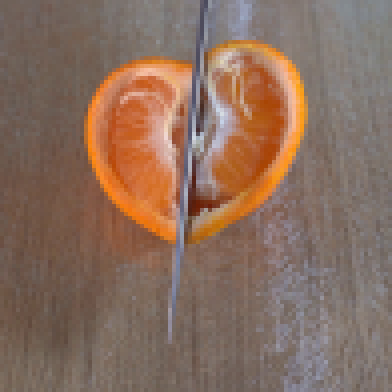
视觉工具实际返回图片 3
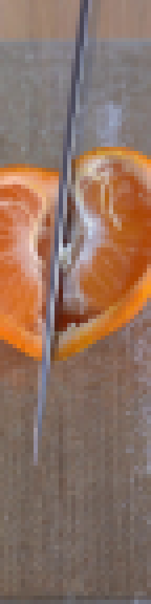
视觉工具实际返回图片 4
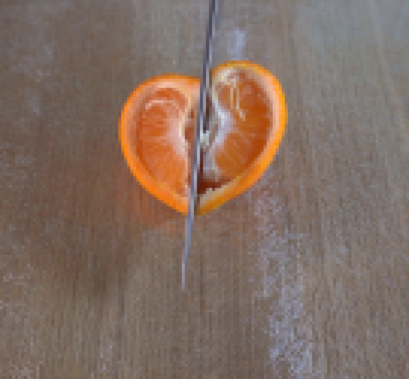
视觉工具实际返回图片 5
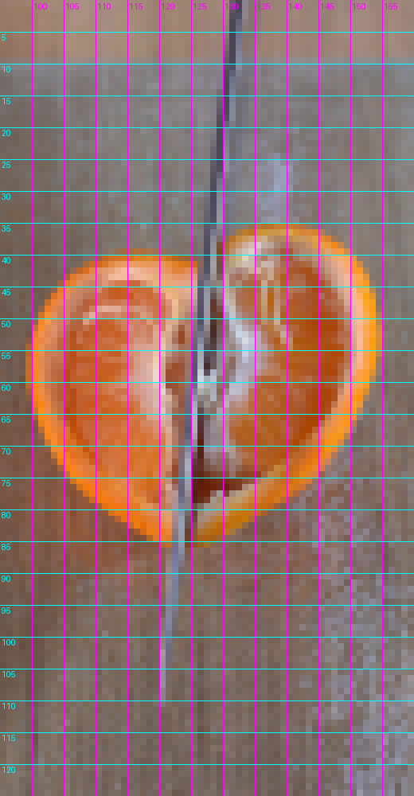
视觉工具实际返回图片 6
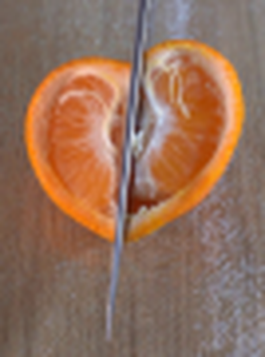
视觉工具实际返回图片 7
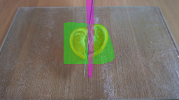
视觉工具实际返回图片 8
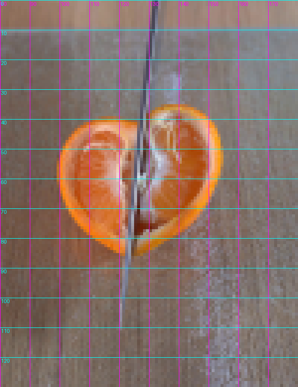
视觉工具实际返回图片 9
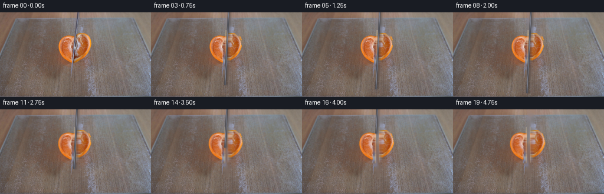
视觉工具实际返回图片 10
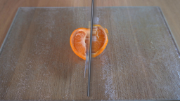
视觉工具实际返回图片 11
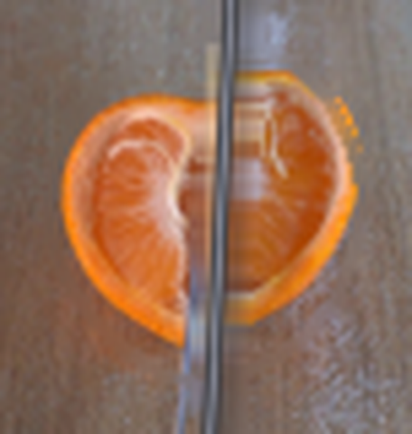
视觉工具实际返回图片 12
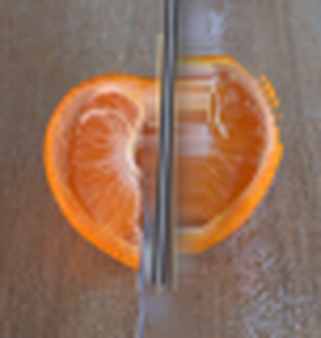
视觉工具实际返回图片 13
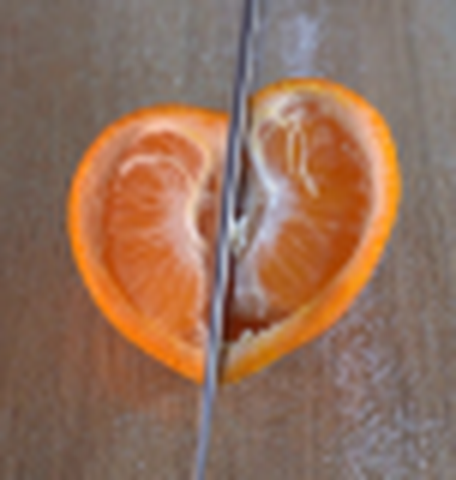
视觉工具实际返回图片 14
视觉工具实际返回图片 15
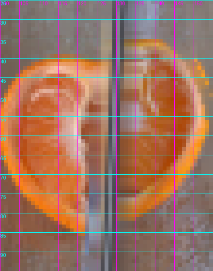
视觉工具实际返回图片 16
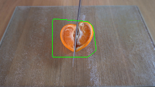
视觉工具实际返回图片 17
视觉工具实际返回图片 18
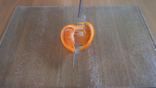
视觉工具实际返回图片 19
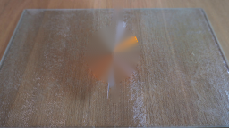
视觉工具实际返回图片 20
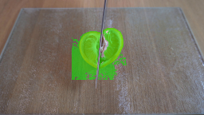
视觉工具实际返回图片 21
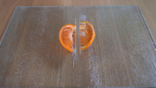
视觉工具实际返回图片 22
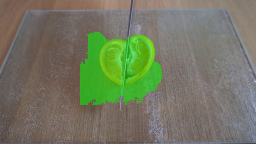
视觉工具实际返回图片 23
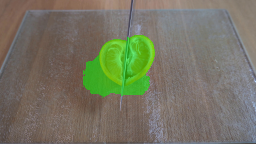
视觉工具实际返回图片 24
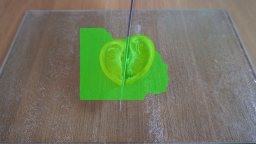
视觉工具实际返回图片 25
视觉工具实际返回图片 26
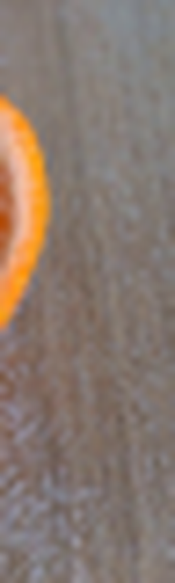
视觉工具实际返回图片 27
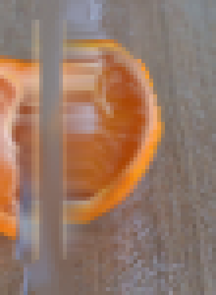
视觉工具实际返回图片 28
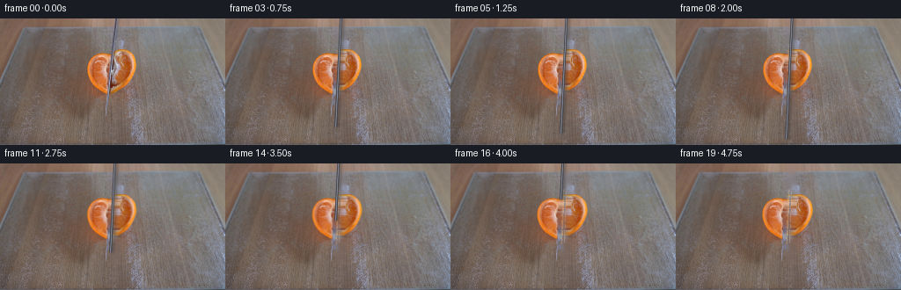
视觉工具实际返回图片 29
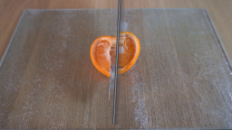
视觉工具实际返回图片 30
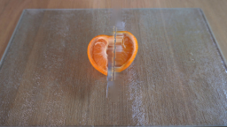
视觉工具实际返回图片 31
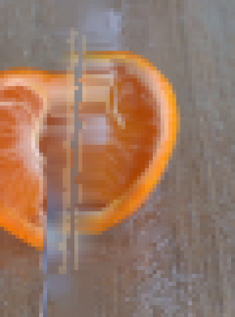
视觉工具实际返回图片 32
视觉工具实际返回图片 33
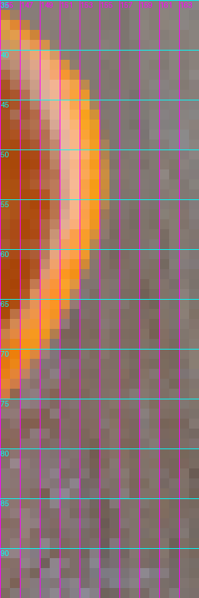
视觉工具实际返回图片 34
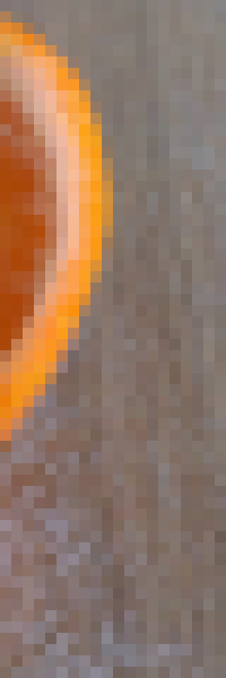
视觉工具实际返回图片 35
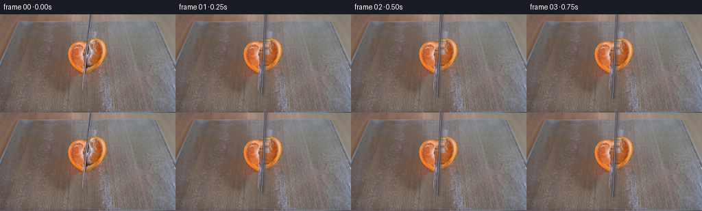
保存候选 3 份；完成命令 47 次；可验证图片返回 35 张。原始 API 响应与完整日志保留在本地。